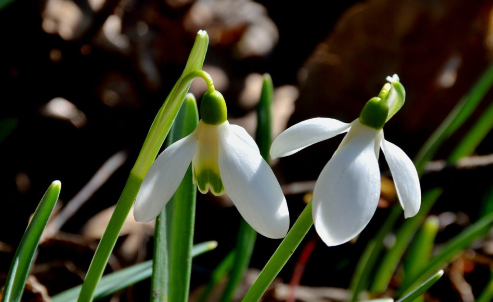

Безвременник веселый
Представляет собой травянистое растение, заселяет луга и поляны, является многолетним.

Подснежник широколистный
Окрас у листьев белый, стебель – зеленый. Подснежник отлично чувствует себя в местах с малым количеством освещения.

Лилия саранка
В высоту растение способно вытягиваться до 80 см. Его цветок окрашен в ярко-фиолетовый цвет, могут присутствовать красные пятна.
Лотос орехоносный
Лотос орехоносный цветет в период с июля по август. Цветок имеет ореховый окрас, его размер доходит до 25 см.